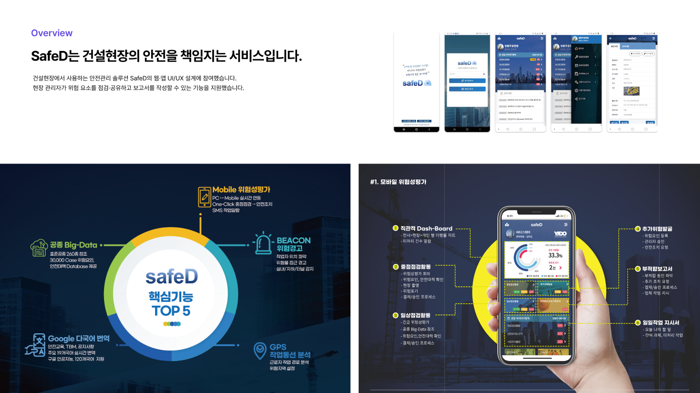
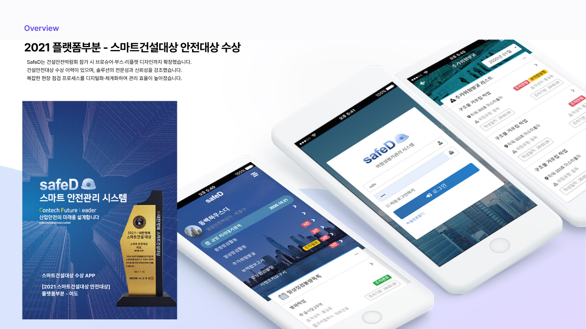
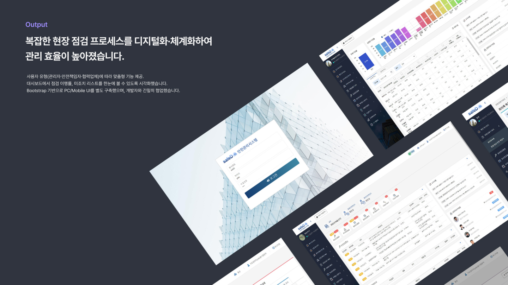
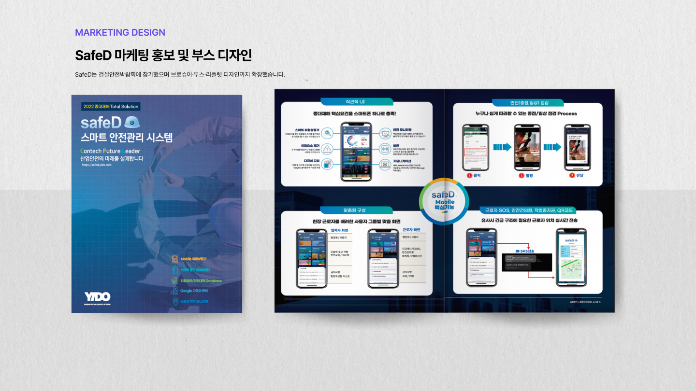
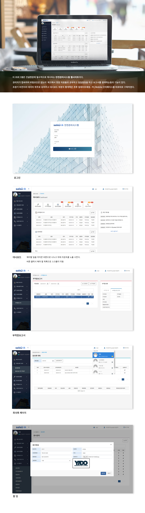
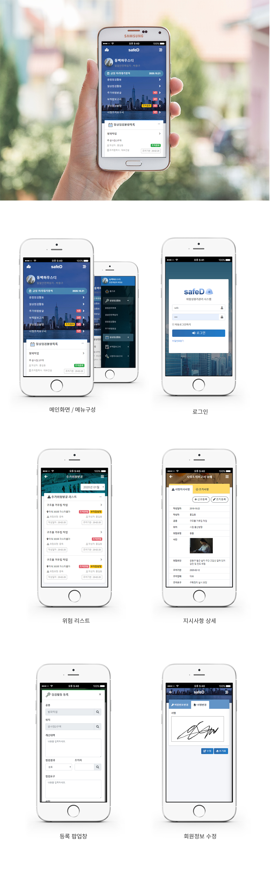

01 — 서비스 소개
복잡한 현장 점검 프로세스를 디지털로 체계화했어요
SafeD는 건설현장에서 사용하는 안전관리 솔루션입니다. 현장 관리자가 위험 요소를 점검·공유하고 보고서를 작성할 수 있는 기능을 지원합니다. 복잡한 현장 점검 프로세스를 디지털화·체계화하여 관리 효율이 높아졌습니다.
현장 점검 · 보고
위험 요소를 발견하면 사진과 함께 즉시 보고하고, 처리 현황을 실시간으로 공유합니다.
보고서 자동 생성
점검 결과를 기반으로 보고서를 자동 생성합니다. 서류 작업 시간을 줄이고 데이터를 체계적으로 관리합니다.
대시보드 모니터링
점검 이행률, 미조치 리스트를 대시보드에서 한눈에 파악할 수 있도록 시각화했습니다.

02 — 사용자별 맞춤 기능
역할에 따라 맞춤형 기능을 제공해요
사용자 유형(관리자·안전책임자·협력업체)에 따라 맞춤형 기능을 제공합니다. Bootstrap 기반으로 PC 웹과 모바일 UI를 별도 구축했으며, 개발자와 긴밀히 협업했습니다. PC에서는 현황 관리와 보고서 확인을, 모바일에서는 현장 점검과 즉시 보고를 중심으로 설계했습니다.


03 — 마케팅 홍보 디자인
박람회 참가와 수상으로 신뢰성을 높였어요
SafeD는 건설안전박람회 참가 시 브로슈어·부스·리플렛 디자인까지 확장했습니다. 솔루션의 전문성과 신뢰성을 강조한 홍보물을 직접 디자인했으며, 2021 플랫폼 부문 스마트건설대상 안전대상을 수상했습니다.

04 — 화면 디자인
주요 화면을 설계했어요
현장 점검, 위험 보고, 대시보드 모니터링 등 핵심 화면을 중심으로 설계했습니다.

